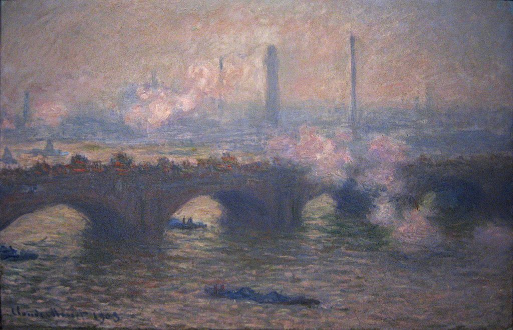

<head>
<meta charset="UTF-8" />
<meta name="keywords" content="drawing, painting" />
<meta name="description" content="drawings by Sunjy" />
<title>Sunjy</title>
<link rel="shortcut icon" type="image/x-icon" href="../../mImages/mCommon/favicon.ico" media="screen" />
<link rel="stylesheet" type="text/css" href="../../mCsses/mCommon/mCssA.css" />
<link rel="stylesheet" type="text/css" href="../../mCsses/mCommon/mCssB.css" />
<link rel="stylesheet" type="text/css" href="../../mCsses/mCommon/mCssC.css" />
<link rel="stylesheet" type="text/css" href="../../mCsses/mCommon/mCssD.css" />
<link rel="stylesheet" type="text/css" href="../../mCsses/mContent/mCssA.css" />
<link rel="stylesheet" type="text/css" href="../../mCsses/mContent/mCssB.css" />
<link rel="stylesheet" type="text/css" href="../../mCsses/mContent/mCssC.css" />
<link rel="stylesheet" type="text/css" href="../../mCsses/mContent/mCssD.css" />
</head>
<script type="text/javascript" src="../../mScripts/mContent/mContentAA.js" /></script>
<script type="text/javascript" src="../../mScripts/mContent/mContentAB.js" /></script>
<script type="text/javascript" src="../../mScripts/mContent/mContentAC.js" /></script>
<script type="text/javascript" src="../../mScripts/mContent/mContentAD.js" /></script>
<script type="text/javascript"></script> 
<script type="text/javascript">
document.write('<div class="mImgAbsolute"></div>');
/*
document.write('<p class="mFontSizeBColor" />From a white paper...</p>');
document.write('<table class="center"><tr><td>');
document.write('');
document.write('</td></tr></table>');
*/
</script>


<script type="text/javascript">
document.write('<p class="mFontSizeBColor" />Waterloo Bridge, Gray Day </p>');
document.write('<p class="mFontSizeSColor" />Waterloo Bridge, Gray Day by Claude Monet, was painted at a time when  Monet had ceased his earlier practice of entirely completing a painting on the spot in front of the subject. Monet continued refining the images back at his home base in France and sometimes used photographs to help in his task. Some purists criticized this new approach. Monet replied in strong terms that the means of creating his work was his own business, and it was up to the viewer to judge the final result.<br><br>In winter, the clouds of coal smoke mixed with the mist from the river and created smog that was like a veil over the city. The haze created changed colors with the light which Monet found fascinating to paint.<br></p>');
document.write('<table class="center" /><tr><td>');
document.write('<br>In winter, the clouds of coal smoke mixed with the mist from the river and created smog that was like a veil over the city. The haze created changed colors with the light which Monet found fascinating to paint.<br>" />');
document.write('</td></tr></table>');
</script>


